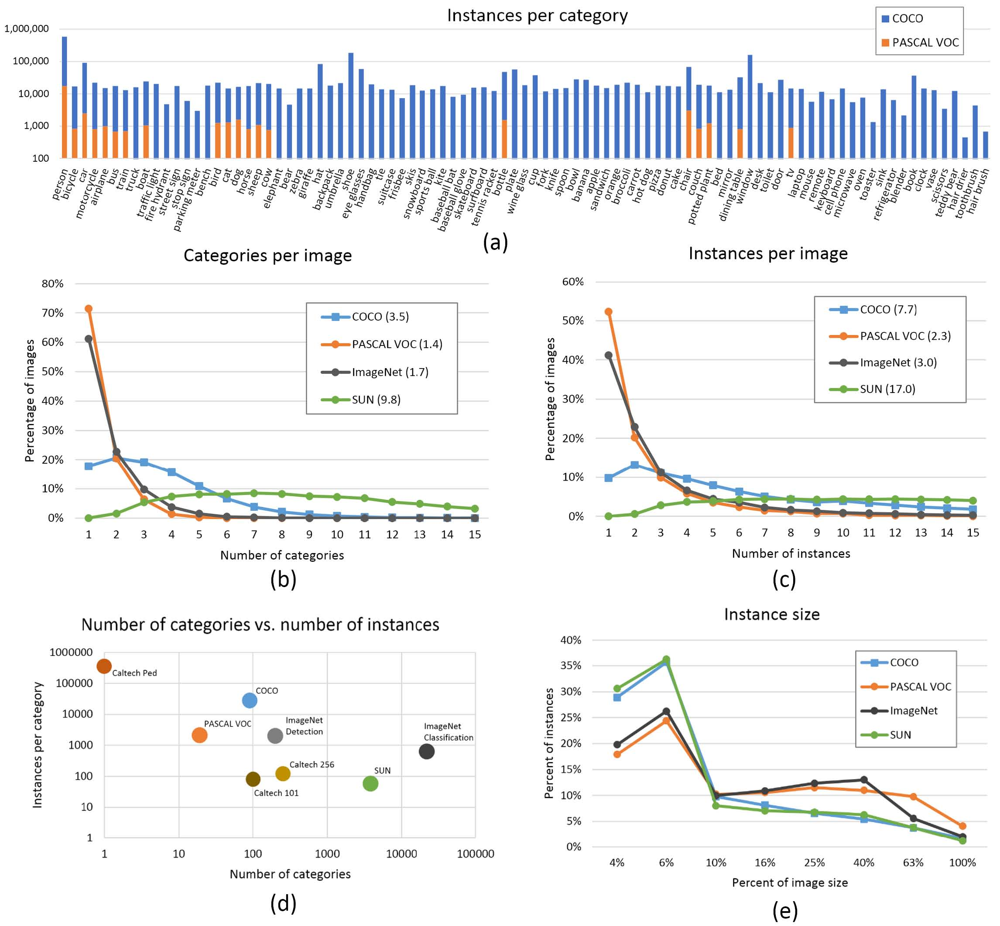

Microsoft COCO：Common Objects in Context[翻译]
文章目录
- 2015年2月21日
- Tsung-Yi Lin Michael Maire Serge Belongie Lubomir Bourdev Ross Girshick James Hays Pietro Perona Deva Ramanan C. Lawrence Zitnick ar Piotr Doll’
摘要
我们提出了一个新的数据集，其目标是通过将对象识别的问题置于更广泛的场景理解问题的背景下来推进对象识别的最新技术。这是通过在自然环境中收集包含共同对象的复杂日常场景的图像来实现的。使用每个实例分段来标记对象以帮助精确的对象定位。我们的数据集包含91种对象类型的照片，这些对象类型很容易被4岁的孩子识别。在328k图像中总共有250万个标记实例，我们的数据集的创建吸引了广泛的群众工作者参与，通过用于类别检测，实例定位和实例分割的新颖用户界面。我们提供了与PASCAL，ImageNet和SUN相比较的数据集的详细统计分析。最后，我们使用可变形零件模型为边界框和分割检测结果提供基线性能分析。
1引言
计算机视觉的主要目标之一是对视觉场景的理解。场景理解涉及许多任务，包括识别存在的对象，以2D和3D定位对象，确定对象和场景的属性，描述对象之间的关系以及提供场景的语义描述。当前对象分类和检测数据集[1]，[2]，[3]，[4]帮助我们探索与场景理解相关的第一个挑战。例如ImageNet数据集[1]，其中包含 尽管有数量空前的图像，但最近在物体分类和检测研究方面都取得了突破[5]，[6]，[7]。社区还创建了包含对象属性[8]，场景属性[9]，关键点[10]和3D场景信息[11]的数据集。这引出了一个显而易见的问题：哪些数据集最能继续推进我们实现场景理解的最终目标？ 我们引入了一个新的大规模数据集，解决了场景理解中的三个核心研究问题：对象的非图标视图（或非规范视角[12]），对象之间的上下文推理以及对象的精确2D定位。对于许多类别的对象，存在标志性视图。例如，当对对象类别“自行车”执行基于网络的图像搜索时，排名靠前的检索示例以符号形式出现，在整齐合成的照片的中心附近无障碍地显示。我们认为当前的识别系统在标志性视图上表现相当不错，但在其他情况下难以识别物体
图1：虽然先前的对象识别数据集集中在（a）图像分类，（b）对象边界框定位或（c）语义像素级分割，但我们关注（d）分割单个对象实例。我们引入了一个大型的，注释丰富的数据集，其中包含描述自然环境中复杂对象的复杂日常场景的图像。 背景，部分遮挡，杂乱[13] - 重新构成实际日常场景的构成。我们通过实验验证;在日常场景中进行评估时，对我们数据进行过培训的模型比使用先前数据集训练的模型表现更好挑战在于：包含多个对象的自然图像。由于图像中的小尺寸或模糊外观，许多对象的身份只能使用上下文来解析。为了在上下文推理中推动研究，需要描绘场景[3]而不是孤立对象的图像。最后，我们认为对对象布局的详细空间理解将是场景分析的核心组成部分。可以使用边界框[2]或使用精确的像素级分段粗略地定义对象的空间位置 - [14]，[15]，[16]。正如我们所展示的，为了测量任何一种本地化性能，数据集必须使每个对象类别的每个实例都被标记并完全分段。我们的数据集在实例级分割掩码的注释中是独一无二的，如图1所示。 为了创建一个实现这三个目标的大规模数据集，我们采用了一种新颖的管道，通过广泛使用Amazon Mechanical Turk来收集数据。首先也是最重要的是，我们收集了大量包含上下文关系和非标志性对象视图的图像。我们使用了一种简单而有效的技术来完成这项工作，该技术可以查询对象对以及通过基于场景的查询检索到的图像[17]，[3]。接下来，使用分层标记方法将每个图像标记为包含特定对象类别[18]。对于找到的每个类别，单个实例都经过标记，验证和.nally分段。鉴于标签固有的模糊性，这些阶段中的每一个都有许多权衡，我们详细探讨了这些权衡。 COntext（MS COCO）数据集中的Microsoft公共对象包含91个常见对象类别，其中82个具有超过5,000个标记实例，如图6所示。总共数据集在328,000个图像中具有2,500,000个标记实例。与流行的ImageNet数据集[1]相比，COCO的类别更少，但每个类别的实例更多。这有助于学习能够精确定位2D的详细对象模型。每个类别的数据集数量也明显大于PASCAL VOC [2]和SUN [3]数据集。此外，我们的数据集与其他数据集之间的一个重要区别是每个图像的标记实例的数量，这可能有助于学习上下文信息，图5.与ImageNet（3.0）相比，MS COCO每个图像包含更多的对象实例（7.7） ）和PASCAL（2.3）。相比之下，SUN数据集包含重要的上下文信息，每个图像有超过17个对象和“填充”，但整体上的对象实例却少得多。 这项工作的简略版本出现在[19]中。
2相关工作
纵观计算机视觉研究的历史，数据集发挥了关键作用。他们不仅提供了培训和评估算法的手段，还在新的更具挑战性的方向上推动研究。地面实况立体声和光学数据集[20]，[21]的创建有助于激发这些领域的兴趣。物体识别数据集的早期发展[22]，[23]，[24]促进了数百种图像识别算法的直接比较，同时将.eld推向更复杂的问题。最近，包含数百万张图像的ImageNet数据集[1]使用一类新的深度学习算法在对象分类和检测研究方面取得了突破[5]，[6]，[7]。 与对象识别相关的数据集可以大致分为三组：主要针对对象分类，对象检测和语义场景标记的数据集。我们依次解决每个问题。 Image Classi.cation object classi.cation的任务需要二进制标签来指示对象是否存在于图像中;见图1（a）。这种类型的早期数据集包含包含具有空白背景的单个对象的图像，例如MNIST手写数字[25]或COIL家庭对象[26]。加州理工学院101 [22]和Caltech 256 [23]标志着从互联网检索的更逼真的对象图像的过渡，同时也分别将对象类别的数量增加到101和256。由于大量的训练样例，CIFAR-10和CIFAR-100 [27]在机器学习社区中流行的数据集提供了来自微小32×32图像数据集的10和100个类别[28]。虽然这些数据集包含多达60,000个图像和数百个类别，但它们仍然只占据了我们视觉世界的一小部分。 最近，ImageNet [1]明显偏离了数据集大小的增量增长。他们建议创建一个包含22k类别的数据集，每个类别包含500-1000个图像。与包含入门级类别[29]的先前数据集不同，如“狗”或“椅子”，如[28]，ImageNet使用WordNet层次结构[30]来获得入门级和.ne-grained [31] ]类别。目前，ImageNet数据集包含超过1400万个标记图像，并且已经在图像分类方面取得了显着进步[5]，[6]，[7]。 对象检测检测对象需要说明属于特定类的对象存在，并将其本地化在图像中。对象的位置通常由边界框表示，如图1（b）所示。早期算法使用各种ad hoc数据集专注于人脸检测[32]。后来，创建了更真实，更具挑战性的人脸检测数据集[33]。另一个流行的挑战是检测pedestri-ans，已经创建了几个数据集[24]，[4]。 Caltech Pedestrian Dataset [4]包含带有边界框的350,000个标记实例。 为了检测基本对象类别，2005年至2012年的多年努力致力于创建和维护广泛采用的一系列基准数据集。 PASCAL VOC [2]数据集包含20个对象类别，分布在11,000个图像上。超过27,000个对象实例边界框被拉平，其中近7,000个具有详细的分割。最近，使用来自ImageNet的400,000个图像的子集，从200个对象类别中创建了检测挑战[34]。使用边界框标记了令人印象深刻的350,000个对象。 由于太阳镜，手机或椅子等许多物体的检测高度依赖于背景信息，因此检测数据集在其自然环境中包含物体非常重要。在我们的数据集中，我们努力收集富含上下文信息的图像。边界框的使用也限制了可以评估检测算法的准确性。我们建议使用完全分段的实例来实现更准确的检测器评估。
图2：（a）标志性物体图像，（b）标志性场景图像和（c）非标志性图像的示例。 语义场景标记在场景中标记se-mantic对象的任务要求将图像的每个像素标记为属于类别，例如天空，椅子，地板，街道等。与检测任务相比，个体对象的实例不需要分段，如图1（c）所示。这使得能够标记难以定义各个实例的对象，例如草，街道或墙壁。室内数据集都存在 [11]和室外[35]，[14]场景。一些数据集还包括深度信息[11]。与语义场景标注类似，我们的目标是测量对象标签的像素精度。但是，我们还旨在区分对象的各个实例，这需要对每个对象的范围有充分的理解。 结合了对象检测和语义场景标记数据集的许多属性的新数据集是用于场景理解的SUN数据集[3]。 SUN包含来自WordNet字典[30]的908个场景类别以及分段对象。 3,819 ob- ject类别跨越了对象检测数据集（人，椅子，汽车）和语义场景la-beling（墙，天空，地板）的共同点。由于数据集是通过描绘各种场景类型的图像来收集的，因此每个对象类别的实例数量表现出长尾现象。也就是说，一些类别具有大量实例（墙：20,213，窗口：16,080，椅子：7,971），而大多数具有相对适度的实例数（船：349，飞机：179，地板灯：276）。在我们的数据集中，我们确保每个对象类别都有大量的实例，如图5所示。 其他视觉数据集数据集刺激了计算机视觉中众多领域的广泛应用。一些着名的数据集包括用于立体视觉的Middlebury数据集[20]，多视图立体声[36]和光学。[21]。伯克利分段数据集（BSDS500）[37]已被广泛用于评估分割和边缘检测算法。还创建了数据集来识别场景[9]和对象属性[8]，[38]。事实上，许多视野都受益于有助于促进进步的具有挑战性的数据集。
3图像集
接下来我们将描述如何选择对象类别和候选日期图像。 3.1共同对象类别 选择对象类别是一项非常重要的工作。这些类别必须构成所有类别的代表性集合，与实际应用相关，并且以足够高的频率发生，以便能够收集大型数据集。其他重要的决定是包括“事物”和“东西”类别[39]以及是否应包括.ne-grained [31]，[1]和对象部分类别。 “东西”类别包括可以容易地标记个体实例的对象（人，椅子，汽车），其中“东西”类别包括没有明确边界的材料和对象（天空，街道，草地）。由于我们主要对对象实例的预定义本地化感兴趣，因此我们决定仅包含“事物”类别而不是“东西”。但是，由于“东西”类别可以提供重要的上下文信息，我们相信未来标记“东西”类别将是有益的。 对象类别的具体情况可能会有显着变化。例如，狗可以是“哺乳动物”，“狗”或“德国牧羊犬”类别的成员。为了能够实际收集每个类别的大量实例，我们选择将数据集限制为入门级类别，即人类在描述对象（狗，椅子，人）时常用的类别标签。某些对象类别也可能是其他对象类别的一部分。例如，一张脸可能是一个人的一部分。我们预计包含对象部分类别（面部，手部，轮子）对于许多实际应用来说都是有益的。 我们使用了几个来源来收集“事物”的入门级对象类别。我们首先通过组合来自PASCAL VOC [2]的类别和1200个最常用的表示视觉识别的单词的子集编制了一系列类别。有能力的对象[40]。为了进一步增加我们的候选人类别，一些年龄在4到8岁之间的儿童被要求为每个人命名
图3：我们的注释管道分为3个主要任务：（a）标记图像中存在的类别（§4.1）， （b）定位和标记所有标记类别的实例（§4.2），以及（c）分割每个对象实例（§4.3）。 他们在室内和室外环境中看到的物体。 .nal 272候选人可以在附录中找到。最后，共同作者对每个类别投了1到5的评分，考虑到它们的常见程度，它们对实际应用的有用性以及它们相对于其他类别的多样性。 .nal类别的选择试图选择具有高票数的类别，同时保持每个超类别（动物，车辆，家具等）的类别数量平衡。获得大量实例（大于5,000）的遗留物也被删除了。为了确保向后兼容性，还包括PASCAL VOC [2]的所有类别。我们的91个建议类别的清单如图5（a）所示。 3.2非标志性图像采集 鉴于对象类别列表，我们的下一个目标是收集一组候选图像。我们可以粗略地将图像分为三种类型，图2：图标对象图像[41]，标志性场景图像[3]和非图标图像。典型的图标对象图像在图像中心的规范透视图中具有单个大对象，如图2（a）所示。标准场景图像是从规范观点拍摄的，通常缺乏人，图2（b）。通过使用Google或Bing图像搜索直接搜索特定类别，可以很容易地找到标志性图像。虽然标志性图像通常提供高质量的对象实例，但它们可能缺乏重要的上下文信息和非规范的视点。 我们的目标是收集数据集，使大部分图像都是非图标的，如图2（c）所示。已经证明，包含更多非图标图像的数据集更能推广[42]。我们使用两种策略收集非图标图像。首先，由PASCAL VOC [2]推广，我们收集了Flickr的图像，这些图像往往具有较少的标志性图像。 Flickr包含业余摄影师使用可搜索的元数据和关键字上传的照片。其次，我们没有孤立地搜索对象类别。搜索“狗”将倾向于返回大型中心犬的标志性图像。但是，如果我们搜索对象类别的成对组合，例如“dog + car”，我们会发现更多非标志性图像。令人惊讶的是，这些图像通常不仅包含搜索中指定的两个类别，还包含许多其他类别。为了进一步补充我们的数据集，我们还搜索了场景/对象类别对，请参阅附录。我们在短时间内下载了一张摄影师拍摄的最多5张照片。在极少数情况下，找不到足够的图像，我们搜索单个类别并执行显式.ltering阶段以删除标志性图像。结果是328,000个图像的集合，在对象之间具有丰富的上下文关系，如图4和图5所示。 2（c）和6。 4图像注释 接下来我们将介绍如何对图像采集进行注释。由于我们希望标记超过250万个对象实例，因此设计具有成本效益且高质量的注释管道至关重要。注释管道如图3所示。对于所有众包任务，我们在亚马逊的Mechanical Turk（AMT）上使用了工作人员。我们的用户界面在附录中有详细描述。请注意，自从这项工作的原始版本[19]以来，我们采取了许多步骤来进一步提高注释的质量。特别是，我们已将类别标签和实例定位阶段的注释器数量增加到8个。我们还添加了一个阶段来验证实例分段。
4.1类别标签
注释我们的数据集的第一个任务是确定每个图像中存在哪些对象类别，如图3（a）所示。由于我们有91个类别和大量图像，要求工人回答每个图像的91个二进制分类问题将非常昂贵。相反，我们使用了分层方法[18]。
（a）（b） 图4：类别标签任务的工人精度和召回率。 （a）多名AMT工人（蓝色）的联合比任何专家（红色）都更容易召回。使用多数专家投票计算了实际情况。 （b）显示每个精度/召回范围的工人数（圆周大小）和每个工人的平均工作数（圆形颜色）。大多数工人精度很高;这些工人通常也会完成更多工作。对于这个情节，每个工人的基本事实是所有其他AMT工人的反应联合起来。有关详细信息，请参见§4.4。 我们将对象类别分为11个超类别（参见附录）。对于给定的图像，向工作者依次呈现每组类别，并要求指示该超类别是否存在任何实例。这大大减少了对各种类别进行分类所需的时间。例如，工人可以很容易地确定图像中没有动物存在而不必特别寻找猫，狗等。如果工人确定存在来自超类别（动物）的实例，则对于每个下属如果存在类别（狗，猫等），工作人员必须将类别的图标拖到图像上的一个类别实例上。这些图标的放置对于以下阶段至关重要。我们强调在这个阶段只需要对每个类别的单个实例进行注释。为了确保高召回率，要求8名工人为每张图片贴上标签。如果任何工人表明该类别，则认为存在类别;误报在后续阶段处理。性能的详细分析见§4.4。这个阶段耗时约2万工时完成。
4.2实例定位
在下一阶段，图像中对象类别的所有实例都被标记，如图3（b）所示。在前一阶段，每个工作者都标记了一个类别的实例，但可能存在多个对象实例。因此，对于每个图像，要求工作人员在前一阶段中找到的特定类别的每个实例的顶部放置一个十字。为了提高召回率，工作人员在上一阶段找到的实例的位置显示给当前工作人员。这样的启动可以帮助工人快速完成初步实例，然后看到图像。工人们也可以使用放大镜来处理小事。要求每个工作人员为每个图像标记最多10个给定类别的实例。每个图像由8名工人标记，总共约1万工时。
4.3实例分段
我们的.nal阶段是分割每个对象实例的艰巨任务，如图3（c）所示。在这个阶段，我们修改了Bell等人开发的优秀用户界面。 [16]用于图像分割。我们的界面要求工作人员对上一阶段中的工作人员指定的对象实例进行分段。如果图像中已经分割了其他实例，则会向工作人员显示这些分段。工作人员还可以指示图像中没有给定类别的对象实例（暗示来自前一阶段的误报标签）或者所有对象实例已经被分段。 分割2,500,000个对象实例是一项非常耗时的任务，每1,000个分段需要超过22个工时。为了最大限度地降低成本，我们每个实例只有一个工作段。但是，当第一次完成任务时，大多数工人只生成粗略的实例轮廓。因此，我们要求所有工作人员完成每个对象类别的培训任务。培训任务要求工作人员对对象实例进行分段。工人无法完成任务，直到他们的分割与事实相符。使用培训任务大大提高了工人的素质（大约1/3的工人通过了培训阶段）并产生了分段。可以在图6中查看示例分段。 虽然培训任务排除了大多数不良工作人员，但我们还对每个分段实例执行了明确的验证步骤，以确保良好的质量。要求多个工作人员（3到5人）判断每个分段，并指出它是否与实例匹配良好。丢弃了不充分质量的分段，并将相应的实例添加回未分段对象池。最后，一些获得批准的工人不断产生差的分割;从这些工人那里得到的所有工作都被丢弃了。 对于包含10个对象实例或更少给定类别的图像，每个实例都是单独分段的（请注意，在某些图像中，最多可分割15个实例）。偶尔实例数量会大幅增加;例如，考虑一群密集的人或一卡车的香蕉。在这种情况下，同一类别的许多实例可以紧密地组合在一起，并且区分各个实例是困难的。在图像中分类10-15个类别的实例之后，使用单个（可能是多部分）片段将剩余的实例标记为“人群”。出于评估的目的，标记为人群的区域将被忽略，并且不会影响探测器的分数。详情见附录。
4.4注释性能分析
我们通过与专业的专家工作人员进行比较，分析了类别标签任务中的人群工作者质量，见图4（a）。我们比较了七名专家工作者（论文的共同作者）的精确度和召回率，以及通过结合一到十名AMT工人获得的结果。使用多数专家投票计算了实际情况。对于这项任务，召回至关重要，因为可以在后期阶段消除误报。图4（a）显示，8名AMT工人的联合，与用于收集我们标签的人数相同，比任何专业工作人员都更容易召回。请注意，工人召回在AMT工作人员大约9-10点饱和。 对象类别的存在通常是模糊的。的确如图4（a）所示，即使是专门的专家也经常 同意物体存在，例如由于图像中固有的模糊性或对类别定义的不同意见。对于任何具有超过50％被注释概率的明确示例，所有8个注释器都缺少这种情况的概率最多为.58≈.004。此外，通过观察我们添加注释器时召回的增加情况，我们估计实际上超过99％的所有对象类别都不会被拒绝，因为在给定8个注释器的情况下会检测到误报。注意，可以进行类似的分析，例如其中也使用8个注释器的定位。 最后，图4（b）重新检查AMT工作人员在更大的图像集上对类别标记的准确性和召回率。每个精度/召回范围显示工人数（圆周大小）和每个工人的平均工作数（圆圈颜色）。与图4（a）不同，我们使用了留一法评估程序，其中如果任何其余工人将该类别命名为该类别，则认为该类别存在。因此，整体工人的精确度要高得多。完成大部分工作的工人也具有最高的精确度;来自黑线以下工作人员的所有工作都被拒绝了。
5数据统计
接下来，我们分析了COntext（MS COCO）数据集中Microsoft Com-mon Objects的属性，并与其他几个流行数据集进行了比较。这些包括ImageNet [1]，PASCAL VOC 2012 [2]和SUN [3]。这些数据集中的每一个在大小，标记类别列表和图像类型方面都有显着差异。创建ImageNet是为了捕获大量的对象类别，其中许多都是.ne-grained。 SUN专注于标记场景类型以及它们中常见的对象。最后，PASCAL VOC的主要应用是自然图像中的物体检测。 MS COCO旨在检测和分割在其自然环境中发生的对象。 所有91个类别的每个类别的实例数量如图5（a）所示。显示对象类别数量和每个类别的实例数量的数据集摘要如图5（d）所示。虽然MS COCO的类别少于ImageNet和SUN，但每个类别的实例更多，我们假设这些实例对于学习能够精确定位的复杂模型非常有用。与PASCAL VOC相比，MS COCO具有更多类别和实例。 我们的数据集的一个重要特性是我们努力在其自然环境中包含对象的非图标图像。可以通过检查每个图像的对象类别和实例的平均数量来估计图像中存在的上下文信息的量，图5（b，c）。对于ImageNet，我们绘制了对象检测验证集，因为训练数据只有一个标记的对象。平均而言，我们的数据集包含 每个图像3.5个类别和7.7个实例。相比之下，ImageNet和PASCAL VOC平均每个图像的数量少于2个，每个图像有3个实例。另一个有趣的观察结果是，MS COCO中只有10％的图像每个图像只有一个类别，相比之下，超过60％的图像在ImageNet和PASCAL VOC中包含单个对象类别。正如所料，SUN数据集具有最多的上下文信息，因为它是基于场景的，并使用不受限制的类别集。 最后，我们分析数据集中对象的平均大小。通常较小的对象难以识别并需要更多的上下文推理来识别。如图5（e）所示，MS COCO和SUN的物体平均尺寸都较小。
6 DATASET SPLITS
为了适应更快的发布计划，我们将MS COCO数据集分成两个大致相等的部分。第一半数据集于2014年发布，下半年将于2015年发布。2014年发布包含82,783次培训，40,504次验证和40,775次4.5标题注释 我们为每个人添加了.ve书面标题描述在MS COCO中有近270k的分段人员和总共图像。 2014年列车+ val统计中的标题886k分段对象实例的完整描述以及它们的收集方式将仅提供数据。 2015年累积版本将在不久的单独出版物中包含。总计165,482训练，81,208验证和81,434测试图像。

图5：（a）MS COCO和PASCAL VOC的每个类别的注释实例数。 （b，c）MS COCO，ImageNet Detection，PASCAL VOC和SUN的每个图像的注释类别和注释实例的数量（类别和实例的平均数量显示在括号中）。 （d）多个流行对象识别数据集的类别数量与每个类别的实例数量。 （e）MS COCO，ImageNet Detection，PASCAL VOC和SUN数据集的实例大小分布。 我们注意尽量减少近乎重复的服务器完成的可能性。通过显式删除近似重复项（使用[43]检测）并对图像进行分组，在分割中存在的图像注意我们已将2014版本限制为子集 80个类别。我们没有收集分段
摄影师和约会。以下11个类别：帽子，鞋子，眼镜（太多遵循既定协议，火车实例注释），镜子，窗户，门，路牌（模糊和验证数据将被释放，但不会用于测试。并且难以标记），盘子，桌子（因为我们目前正在混淆。分别对碗和餐桌评估服务器）和搅拌器，头发自动评估测试装置。一个完整的讨论画笔（实例太少）。 We may add segmentations for of evaluation metrics will be added once the evaluation some of these categories in the cumulative 2015 release.
图6：MS COCO数据集中的注释图像样本。 7 [44]（第5版[45]）在PASCAL VOC 2012上接受过培训的算法分析.DPMv5-C：在COCO上接受过相同的实施培训 边界框检测用于以下实验（5000个正像和10000个负像）。我们用的是 我们从数据集1和默认参数设置中获取55,000个图像的子集，用于训练COCO模型。 从带注释的分割掩码中获取紧密的边界框。我们评估两者测试的模型如果我们比较DPMv5-P MS COCO和PASCAL的平均性能，请参见表1.我们评估两个关于PASCAL VOC和MS COCO，我们和那些平均不同的模型。 DPMv5-P：MS COCO的最新实现性能下降了近一倍 2，表明MS COCO确实包含更多的差异 这些初步实验是在我们的.nal之前进行的 部分遮挡的物体的（非标志性）图像，
分割数据集介绍train，val和test。评估服务器完成后，将添加实际测试集的基线。在杂乱等等中我们注意到性能的类似下降 飞机自行车鸟船瓶公共汽车车猫椅子牛表狗马moto人植物绵羊沙发火车电视平均。
表1：上：在PASCAL VOC 2012上评估的检测性能.DPMv5-P是Girshick等人报道的性能。在VOC版本5中.DPMv5-C使用相同的实现，但是使用MS COCO进行培训。下图：使用PASCAL VOC 2012（DPMv5-P）和MS COCO（DPMv5-C）培训的DPM模型在MS COCO上的性能评估。对于DPMv5-C，我们使用了5000个正面和10000个负面训练样例。虽然MS COCO比PASCAL更具挑战性，但使用更多训练数据和更复杂的方法[5]，[6]，[7]应该大大提高性能。 对于在MS COCO（DPMv5-C）上训练的模型。 可以通过比较DPMv5-P和DPMv5-C来分析对PASCAL VOC或MS COCO培训的检测性能的影响。他们对不同的培训数据源使用相同的实现。表1显示，当在PASCAL VOC上进行测试时，DPMv5-C在20个类别中的6个中仍然优于DPMv5-P。在某些类别（例如，狗，猫，人）中，在MS COCO上训练的模型表现更差，而在其他类型（例如，公共汽车，电视，马）上，在我们的数据上训练的模型更好。 与过去的观察[46]一致，我们在训练期间包括dif.cult（非标志性）图像可能并不总是有帮助。如果模型不够丰富以捕获这种外观可变性，则这些示例可以充当噪声并污染所学习的模型。我们的数据集允许探索此类问题。 Torralba和Efros [42]提出了一种度量来衡量跨数据集的推广，该度量计算了在一个数据集上训练并在另一个数据集上进行测试的模型的“性能下降”。 DPMv5-P模型在两个数据集上的性能差异为12.7 AP，而DPMv5-C模型仅具有7.7个AP差异。此外，MS COCO的整体表现要低得多。这些观察结果支持两个假设：1）MS COCO明显比PASCAL VOC更加困难，2）在MS COCO上训练的模型可以更好地推广更容易的数据集，如PASCAL VOC，给出更多的训练数据。要深入了解数据集之间的差异，请参阅附录，了解两个数据集中人员和椅子示例的可视化。 从检测生成分割我们现在描述一种生成对象边界框和分割掩模的简单方法，遵循先前的工作，从对象检测[47]，[48]，[49]，[50]生成分割。我们学习了aspect-speci.c像素级段 -
不同类别的心灵面具。通过对齐训练实例中的分段掩码进行平均，可以了解这些知识。我们学习了与DPM探测器中不同混合物相对应的不同掩模。样品掩模在图7中可视化。 通过分割评估的检测即使假设检测器报告正确的结果，分割也是一项具有挑战性的任务。对象部分的定位图8：使用分割掩模与边界框评估实例检测。边界框是铰接物体的特别粗略的近似;在这种情况下，（蓝色）紧密边界框中的大多数像素不位于对象上。我们的（绿色）实例级分割掩码允许更准确地测量对象检测和定位。
边界。为了将分割评估与检测正确性分离，我们仅使用正确的检测来对分割质量进行基准测试。具体而言，假设探测器报告了一个正确的边界框，那么该对象的预测分割与地面真实分割的匹配程度如何？作为正确检测的标准，我们强加了标准要求，即预测和地面真值框之间的并集交叉至少为0.5。然后，我们测量预测和地面真实分割掩模的结合的截面，参见图8.为了建立我们的数据集的基线，我们将学习的DPM部分掩模投影到图像上以创建分割掩模。图9显示了在20个PASCAL类别上学习并在我们的数据集上测试的DPM分段基线的结果。
在MS COCO上测量的20个PASCAL VOC类别证明了问题的难度（右图）。
8讨论
我们引入了一个新的数据集，用于检测和分割在自然环境中日常生活中发现的物体。利用超过70,000个工时，收集，组织和组织了大量的对象实例，以推动对象检测和分割算法的进步。重点放在自然环境和不同观点的物体的非图标图像上。数据集统计信息表明图像包含丰富的上下文信息，每个图像中存在许多对象。 我们的数据集上有未来发布的几个有希望的方向。我们目前只标记“东西”，但标记“东西”也可能提供可能对检测有用的重要信息。许多对象检测算法受益于其他注释，例如实例被遮挡的数量 [4]或对象上关键点的位置[10]。最后，我们的数据集可以为其他类型的标签提供一个很好的基准，包括场景类型[3]，属性[9]， [8]和完整的句子书面描述[51]。我们正在积极探索添加各种此类注释。 要下载并了解有关MS COCO的更多信息，请访问项目网站2。 MS COCO将随着时间的推移而发展和成长;在线提供最新信息。 致谢微软为所有人群工作人员提供资金。 P.P.和D.R.得到了ONR MURI Grant N00014-10-1-0933的支持。我们要感谢所有社区成员，他们在整个定义和收集数据集的过程中提供了宝贵的反馈。
附录概述
在附录中，我们提供了AMT用户界面的详细描述以及272个候选类别（从中选择了我们的.nal 91）和40个场景类别（用于场景对象查询）的完整列表。
附录I：用户界面
我们描述和可视化我们的用户界面，用于收集非图标图像，类别标签，实例定位，实例分割，分割验证和.nally人群标签。 非标志性图像集Flickr提供与文本标题相关的丰富图像集。但是，字幕可能不准确，图像可能是标志性的。为了构建高质量的非图标图像集，我们首先通过搜索对象类别对或对象和场景类别对来收集候选图像。然后，我们创建了一个AMT .ltering任务，允许用户从128个候选网格中删除无效或标志性图像，如图10所示。我们发现指令的选择至关重要，因此为用户提供了标志性和非标志性的示例图片。有些类别很少与其他类别共同发生。在这种情况下，我们仅使用对象类别作为搜索项来收集候选者，但是应用类似的.ltering步骤，图10（b）。
（a）用于选择包含对象的非图标图像的界面。 （b）为很少与他人共处的类别选择非图标图像的界面。
类别标签图12（a）显示了我们的类别标签界面。我们设计了标签任务，以鼓励工人注释图像中存在的所有类别。工作人员通过将图标从底部类别面板拖放到相应的对象实例上来注释类别。每个对象类别中只需要在图像中注释一个实例。我们按照图11中的超类别对图标进行分组，允许工作人员快速跳过不太可能存在的类别。
实例定位图12（b）描述了我们用于标记给定类别的所有实例的界面。界面初始化为闪烁图标，指定从前一个类别标记阶段获得的单个实例。然后要求工人发现并点击给定类别的最多10个实例，在每个实例的区域内的任何位置放置一个十字。为了发现小物体，我们发现包含一个“放大镜”功能至关重要，该功能可以使工人当前所选区域的分辨率加倍。 实例分割图12（c）显示了用于实例分割的用户界面。我们修改了OpenSurfaces项目[16]中的源代码，该项目定义了一个单独的AMT任务，用于在真实场景中分割同质材料的多个区域。在我们的例子中，我们定义了一个单独的任务来分割从前一个注释阶段标记的单个对象实例。为了帮助分割过程，我们添加了对象类别图标的可视化，以提醒工作人员要分类的类别。至关重要的是，我们还增加了放大功能，以便对小物体和弯曲边界进行有效的注释。在之前的注释阶段，为了确保所有对象实例的高覆盖率，我们使用多个工作器来标记每个图像的所有实例。我们希望对所有此类对象实例进行分段，但跨不同工作人员的实例注释可能会引用不同的或冗余的实例。为了解决这种对应模糊性，我们依次发布AMT分段任务，忽略现有分段掩码已经覆盖的实例注释。 分段验证图12（d）显示了我们用于分段验证的用户界面。由于前一任务的耗时性质，每个对象实例仅被分段一次。因此，验证阶段的目的是确保来自前一阶段的每个分段实例具有足够高的质量。工人被显示为64个分段的网格，并要求选择质量差的分段。已知64个分割中的4个是坏的;工人必须确定4个已知坏分段中的3个才能完成任务。每个分段最初显示为3个注释器。如果任何注释者表明分割是不好的，则会向另外两名工作人员显示。此时，丢弃任何未收到5个有利投票中的至少4个的分段，并将相应的实例添加回未分段对象池。通过（4/5票）或被拒绝（3/5票）的边界案件的例子如图15所示。 人群标签图12（e）显示了我们用于人群标签的用户界面。如所讨论的，对于包含十个对象实例或更少给定类别的图像，每个对象实例被单独分段。但是，在某些图像中，给定类别的实例数量要高得多。在这种情况下，人群标记为注释提供了更有效的方法。我们允许工作人员“绘制”属于相关类别的所有像素，而不是要求工人在每个对象实例周围绘制精确的多边形蒙版。群体标记类似于语义分割，因为对象实例未被单独识别。我们强调人群标记仅对包含给定类别的十个以上对象实例的图像是必要的。
附录二：对象和场景类别
我们的数据集包含91个对象类别（2014年重新租赁包含其中80个类别的分段掩码）。我们首先列出了从WordNet，LabelMe，SUN和其他来源获取的频繁对象类别以及从幼儿免费召回实验中获得的类别。然后，作者对由此产生的272个类别进行了投票，目的是对一系列具有多样性且具有计算挑战性的类别进行抽样;有关详细信息，请参见§3。表2中的列表按投票的降序列出了这272个类别。如上所述，91种类别的.nal选择试图选择具有高票数的类别，同时保持每个超类别（动物，车辆，家具等）的类别数量平衡。 如§3中所讨论的，除了使用对象 - 对象查询来收集非图标图像之外，对象场景查询也被证明是有效的。对于此任务，我们从SUN数据集中选择了40个场景类别的子集，这些场景类别经常与感兴趣的对象类别共同发生。表3列举了40个场景类别（在室内和室外场景之间均匀分配）。
（a）PASCAL VOC。 （b）MS COCO。 图13：来自PASCAL VOC和MS COCO的随机人员实例。每个图像最多采样一个实例。
表2：候选类别列表（272）。粗体：选定的类别（91）。粗体：2014年版（11）中省略了类别。
（a）PASCAL VOC。 （b）MS COCO。
图14：来自PASCAL VOC和MS COCO的随机椅子实例。每个图像最多采样一个实例。
图15：在验证阶段通过（顶部）或被拒绝（底部）的边界分割的示例。
表3：场景类别列表。
文章作者 Jeff Liu
上次更新 2019-01-30